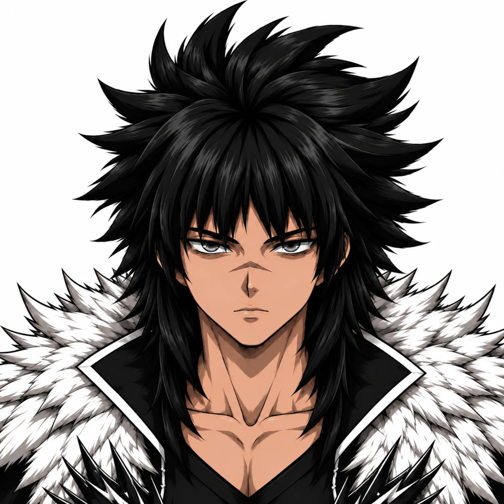
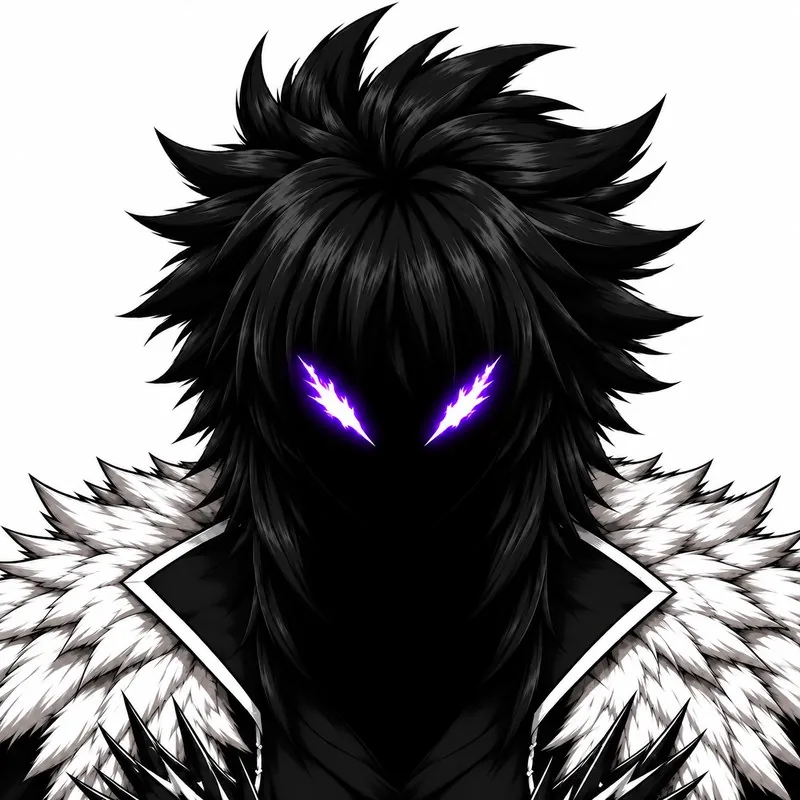

Fearness

Quem é Fearness
Pouco comunicativo, sereno e sem propósito maior, Fearness só é dominado por uma obsessão: vencer para não perder. Toque em cada quadrante para ver mais.
Outras vistas


Aparência e vestimenta
Forsaken
Os pilares do poder
Anular, absorver, converter e dissipar: os quatro pilares do poder. Toque em um quadrante para ver mais.
Ciclo do poder
O ciclo é apenas uma demonstração, usada como exemplo de como o poder funciona na prática. O poder em si não é um ciclo. Toque em uma etapa do ciclo para ver o que ela representa.

Dinamismo dos olhos
Restrição

Sobrecarga
Quando a energia passa da capacidade máxima, ela vaza e Fearness perde a anulação e a absorção até a reserva chegar a zero.
A linha branca marca o limite da reserva. O que passa dela é o excedente da Sobrecarga.
Selo

As faixas dos antebraços são os selos que controlam o acesso à Forsaken Rupture. A retirada dos selos libera o acesso à Forsaken Rupture, cuja ativação depende da energia excedente produzida pela Sobrecarga. Ative as duas condições abaixo:
Forsaken Rupture

Barra de reserva
Durante a Rupture, a reserva adicional amplia a capacidade convencional, permitindo armazenar o excedente energético que sustenta a transformação.